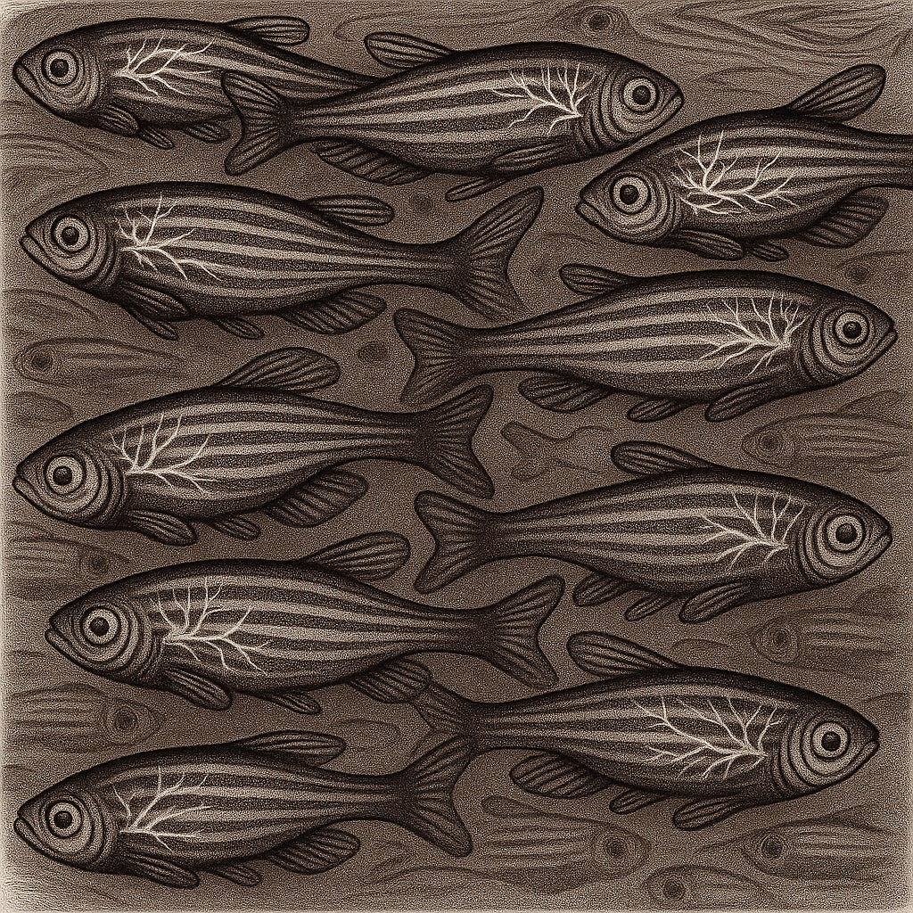

Decoding Science 008: Recreating Neuronal Patterns, Finding Hidden Gems with LLMs, and Predicting Enzyme Specificity with GNNs
Understanding the brain requires being able to visualise neuronal firing processes and simultaneously link these to actions, in real time.
Whilst mice remain the key model of choice for neuroscience, larval zebrafish offer the unique advantage of being transparent.
A see-through body: engineered for cells to fluoresce upon influx of calcium ions, and acting as a blueprint of firing patterns of the brain.
